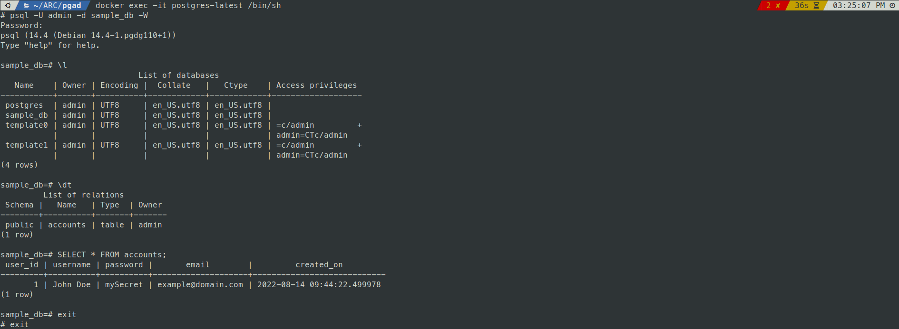

This post briefly documents the process of using Postgres, pgAdmin via Docker container.
Introduction
PostgreSQL, also known as Postgres, is a free and open-source relational database management system emphasizing extensibility and SQL compliance.
pgAdmin is the most popular and feature rich Open Source administration and development platform for PostgreSQL
Goals
- Pull Docker Images from Docker Hub
- Run the downloaded Postgres, pgAdmin Docker Image
- Connect to the Database via pgAdmin
- Interact with the MySQL Database via pgAdmin
- Container Management (Stop, Restart, Stats)
- Cleanup (Remove)
Minimum Software Requirements
Getting Started
Setup
Connect to Database via pgAdmin
Email Address : root@admin.com
Password : root
CREATE TABLE accounts (
user_id serial PRIMARY KEY,
username VARCHAR ( 50 ) UNIQUE NOT NULL,
password VARCHAR ( 50 ) NOT NULL,
email VARCHAR ( 255 ) UNIQUE NOT NULL,
created_on TIMESTAMP NOT NULL DEFAULT now()
);
INSERT INTO accounts(username,password,email) VALUES('John Doe','mySecret','example@domain.com');
SELECT * FROM accounts;
Connect to DB via Terminal

docker exec -it postgres-latest /bin/sh
psql -U admin -d sample_db -W
Password: admin
sample_db=# \l
sample_db=# \dt
sample_db=# SELECT * FROM accounts;
sample_db=# exit
# exit
Cleanup (Remove)
docker-compose down